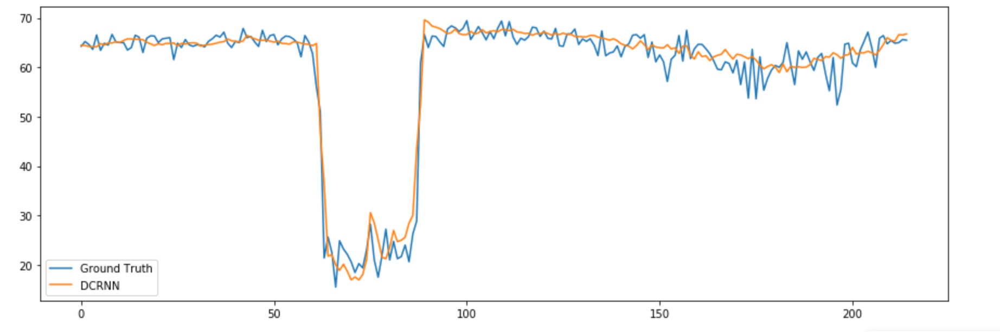
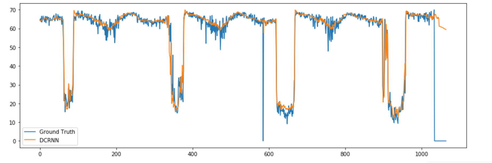
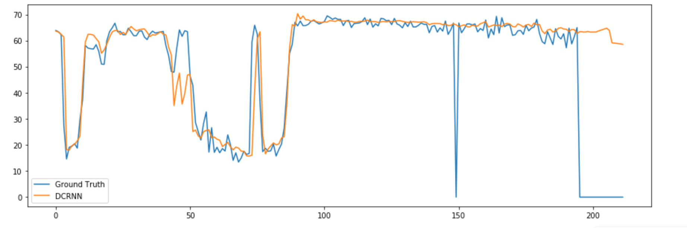
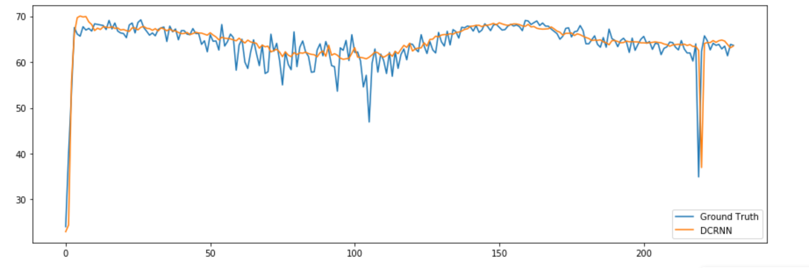
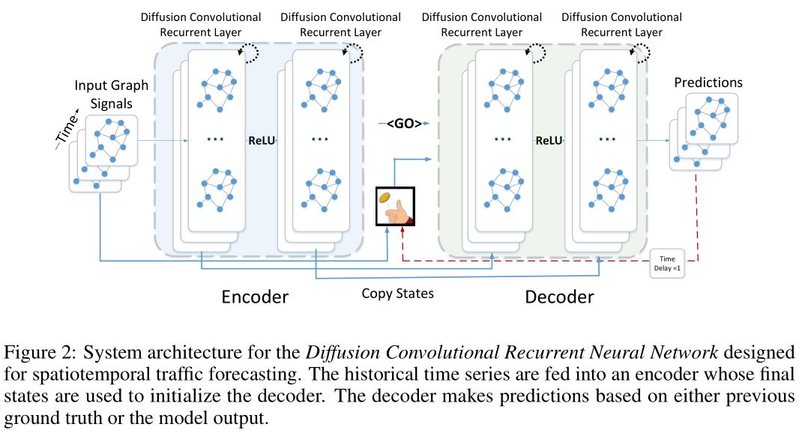
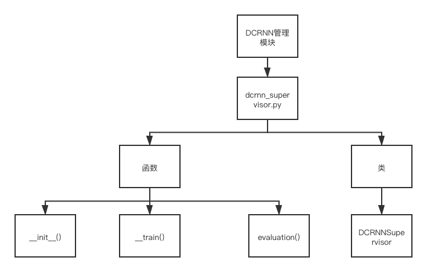
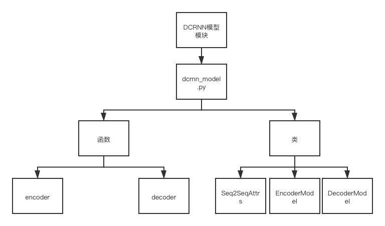
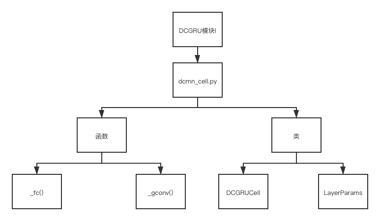
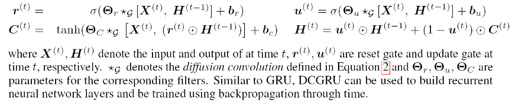

DCRNN_PyTorch代码解析
总体框架

- data存放模型用到的数据。其中METR-LA和PEMS-BAY文件夹存放的是scripts中generate_training_data.py生成的数据，model保存的是训练好的模型及其设置参数，sensor_graph保存的是传感器的数据，其中graph_sensor_ids.txt保存了所有数据中所使用的传感器的id，distances_la_2012.csv以csv格式保存了传感器之间的距离。metr-la.h5和pems-bay.h5是两个城市的交通数据。
- figures文件存放的是模型总体结构的图片。
- lib文件包含模型用到的工具函数、优化算法和评价指标。
- model文件中dcrnn_supervisor.py是训练过程中控制整个训练流程的文件，dcrnn_model.py定义了dcrnn模型，dcrnn_cell.py定义了模型中的cell单元，其中实现了核心的扩散卷积。
- scripts包含数据预处理代码，其中gen_adj_mx.py用于生成图的邻接矩阵，generate_training_data.py用于生成训练、验证和测试数据。
- dcrnn_train_pytorch.py是用来训练模型的，run_demo_pytorch.py是用来跑一下已经训练好的模型。
运行说明
需要安装的依赖
- torch
- scipy>=0.19.0
- numpy>=1.12.1
- pandas>=0.19.2
- pyyaml
- statsmodels
- tensorflow>=1.3.0
- tables
- future
依赖可以依照下面的命令直接安装:
1 | pip install -r requirements.txt |
使用pip安装的一些建议
- 得保证pip对应的环境不是base环境，不然会和其他环境冲突，一定要用which python或者where python检查一下是否是自己conda环境内的python。
- 最好是使用conda一个个安装
与tensorflow的效率比较
使用MAE损失函数
| Horizon | Tensorflow | Pytorch |
|---|---|---|
| 1 Hour | 3.69 | 3.12 |
| 30 Min | 3.15 | 2.82 |
| 15 Min | 2.77 | 2.56 |
数据预处理
METR-LA和PEMS-BAY的数据文件, metr-la.h5 和 pems-bay.h5, 下载地址 Baidu Yun, 把他们放在 data/ 文件夹.
*.h5 以 panads.DataFrame 格式存放数据，使用的是 HDF5 文件格式。数据框如下所示:
| sensor_0 | sensor_1 | sensor_2 | sensor_n | |
|---|---|---|---|---|
| 2018/01/01 00:00:00 | 60.0 | 65.0 | 70.0 | … |
| 2018/01/01 00:05:00 | 61.0 | 64.0 | 65.0 | … |
| 2018/01/01 00:10:00 | 63.0 | 65.0 | 60.0 | … |
| … | … | … | … | … |
这是关于HDF5数据格式的参考资料： Using HDF5 with Python.
运行下面命令生成 train/test/val 数据集，数据集位于 data/{METR-LA,PEMS-BAY}/{train,val,test}.npz.
1 | # 生成数据集文件夹 |
运行预训练模型模型
1 | # METR-LA |
DCRNN模型的预测结果位于 data/results/dcrnn_predictions.
模型训练
1 | # METR-LA |
模型评估
1 | # METR-LA |
PyTorch运行结果




scripts文件
主要包括数据预处理的代码。
gen_adj_mx.py
gen_adj_mx.py是用来生成邻接矩阵的。
main函数里面首先定义了命令行参数，如
1 | parser.add_argument('--sensor_ids_filename', type=str, default='data/sensor_graph/graph_sensor_ids.txt', help='File containing sensor ids separated by comma.') |
其中的参数分别表示命令的名称，类型，默认值，帮助信息。 定义后就可以用定义后就可以用 args.sensor_ids_filename 就可以取相应的值。然后通过get_adjacency_matrix 函数生成邻接矩阵，最后保存到 pickle 的文件。 get_adjacency_matrix(distance_df, sensor_ids, normalized_k=0.1) 具体的解释:
初始化:
dist_mx的大小为[num_sensors,num_sensors]其中(num_sensors = len(sensor_ids))，初始值为inf(无限大)构建传感器id到索引映射:遍历所有对象
sensor_ids，将每一个i填充至sensor_id_to_ind[sensor_id]，即sensor_id_to_ind[sensor_id] = i。用距离填充矩阵中的单元格:遍历所有
distance_df.values，从sensor_id_to_ind[row[0]](from)到sensor_id_to_ind[row[1]](to)，填充row[2](distance)。对
dist_mx进行归一化，以减少计算量;对于稀疏性，将低于阈值(例如k)的项设置为零，如:
adj_mx[adj_mx < normalized_k] = 0
generate_training_data.py
generate_training_data.py是用来生成训练数据的。
以1小时为统计间隔，记录每天的间隔小时数
time_in_day，并添加到data_list以1天为统计间隔，记录每周的间隔天数
day_in_week，并添加到data_list在补偿之后的时间范围内
(range(min_t,max_t))，记录每天的时间特征指标到x，y将数据写入npz文件(
num_test = 6831)使用最后的6831示例作为测试，其中1/8用于验证，其余7/8用于训练。

model文件
模型总体框架如下图所示，总体是一个encoder-decoder结构，encoder和decoder里面各包含有两个 RNNCell，每个RNNCell包含有64个units，每个units里面包含207个结点(传感器个数)。其中用到了 scheduled sampling，即每次以一定的概率用模型的预测值作为下一个cell的输入进行预测，并且这个 概率值随着时间增大。GO是初始化为全0的矩阵，即第一次用模型的预测值作为下一个cell的输入进行预 测的时候是取全0的值作为输入。

dcrnn_supervisor.py

用于管理整个训练过程(从输入到输出)，即定义整个图。定义了一个DCRNNSupervisor类，它保存了 训练过程的参数，定义了记录训练状态的logging，然后将数据放入DCRNN模型中进行处理，得到结果后计算损失，获得梯度，进行梯度裁剪，更新梯度，保存参数。
1 | class DCRNNSupervisor: |
(1)类初始化
1 | def __init__(self, adj_mx, **kwargs): |
(2)训练模块
1 | def _train(self, base_lr, |
(3)评估模块
1 | def evaluate(self, dataset='val', batches_seen=0): |
dcrnn_model.py
这部分调用了两次DCGRUCell，它分别返回了一个cell和一个cell_with_projection(最后一层cell要进行 预测，需要将维度变为预测值的维度)，定义了一个encoder(包含两个cell)和decoder(包含一个cell 和一个cell_with_projection)。每个RNNcell由64个units构成，每个units有207个结点。

(1)Seq2Seq模块
1 | class Seq2SeqAttrs:#定义父类，初始化Seq2Seq模型各项参数 |
(2)EncoderModel模块
1 | class EncoderModel(nn.Module, Seq2SeqAttrs): |
(3)DecoderModel模块
1 | class DecoderModel(nn.Module, Seq2SeqAttrs): |
(4)DCRNNModel模块
1 | class DCRNNModel(nn.Module, Seq2SeqAttrs): |
dcrnn_cell.py
dcrnn_cell实现了论文中的DCGRU，它将卷积融合到了GRU里面。具体结构如下:

它实现了论文中的如下部分：

(1)实现初始化
1 | def __init__(self, num_units, adj_mx, max_diffusion_step,num_nodes,num_proj=None,activation=tf.nn.tanh,reuse=None, filter_type="laplacian",use_gc_for_ru=True): |
该函数实现了GRU模块成员变量的初始化，包括units数量，路网图距离权重邻接矩阵，扩散步数，节点数量。输入参数num_units表示每个cell中units的数量，参与后面state_size(self,)，output_size(self)的计算；输入参数adj_mx对应速度检测站之间的归一化后的距离权重邻接矩阵；输入参数max_diffusion_step表示允许的最大随机游走的步数；输入参数num_nodes表示速度检测站节点的数量；输入参数num_proj 代表预测结果的数量（如num_proj=1表示预测1个结果，num_proj=2表示预测2个结果）。如果num_proj不为空（None），即到了最后一层cell_with_projection，GRU模块在计算后会进行预测。
(2)实现基于图卷积的随机游走函数
1 | def _gconv(self, inputs, state, output_size, bias_start=0.0): |
这里实现了论文中的扩散卷积方法。首先将input和state拼接为input_state，即论文中的，将input_state和random_walk_mx进行max_diffusion_step次图卷积，结果是max_diffusion_step步随机游走的结果，然后用将乘以一个weights矩阵把维度变换为output_size。首先对input和state进行计算，对计算结果进行nn.sigmoid()激活。这里的和为GRU模型中的reset_gate和update_gate。然后计算GRU核，如果存在激活函数，则。计算新的输出和状态 ，除非到了最后一层cell_with_projection，否则output总是和new_state是一样的。判断是否需要输出预测值，如果不需要，则直接返回output，new_state。如果需要进行预测，将output乘以一个w矩阵将维度变换为output_size，最后返回output，new_state。